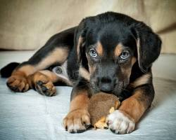
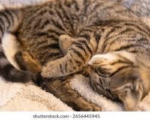
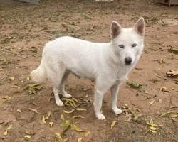

Firulais
Edad: 2 años
Tamaño: Mediano
Muy juguetón, amigable con niños y vacunado.
Conoce a los peluditos que buscan un hogar amoroso.

Edad: 2 años
Tamaño: Mediano
Muy juguetón, amigable con niños y vacunado.

Edad: 1 año
Tamaño: Pequeño
Tranquilo, cariñoso y adaptado a vivir en interiores.

Edad: 6 meses
Tamaño: Mediano
Enérgica, esterilizada y sociable con otros perros.